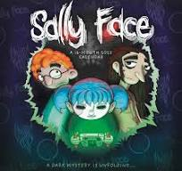

Sally face é um jogo Indie feito inicialmente pelo Steve Gabry (Portable mouse), criado em 2015, ficou famoso pelo seus suspenses e revoltas ao passar dos capitulos, com desafios e enigmas, um mais dificil que o outro, com mortes tragicas e um terror psicodelico e grotesco ao mesmo tempo, sendo um jogo ganhador do primero lugar na Chainsaw game & Music festival 2022